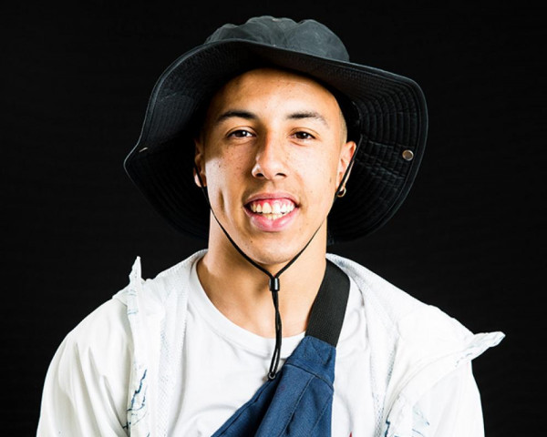

Jonathan Perroni, champion de trottinette freestyle. A 21 ans, le jeune Français a été sacré champion du monde en 2018 et fait déjà parmi des meilleurs de sa discipline.
Esteban Clot est un rider pro qui à commencer à faire c’est preuve très tôt, à l’âge de 15 ans il fini en finale pro au Fise 2019 et il gagne le Fise 2020 à 16 ans.